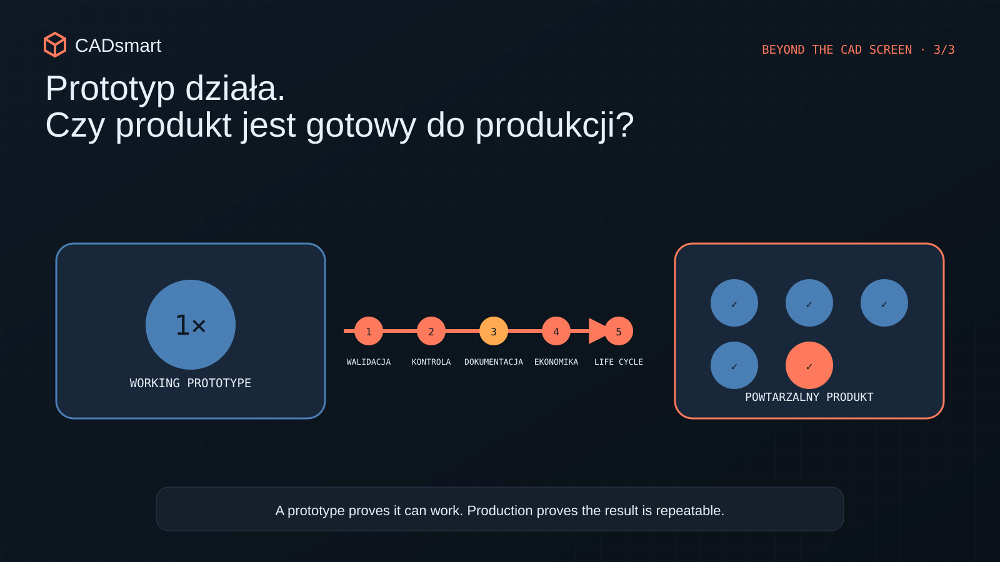
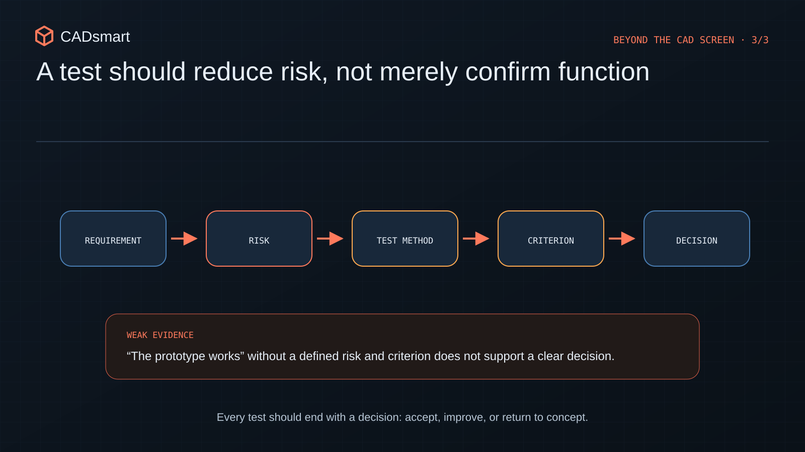
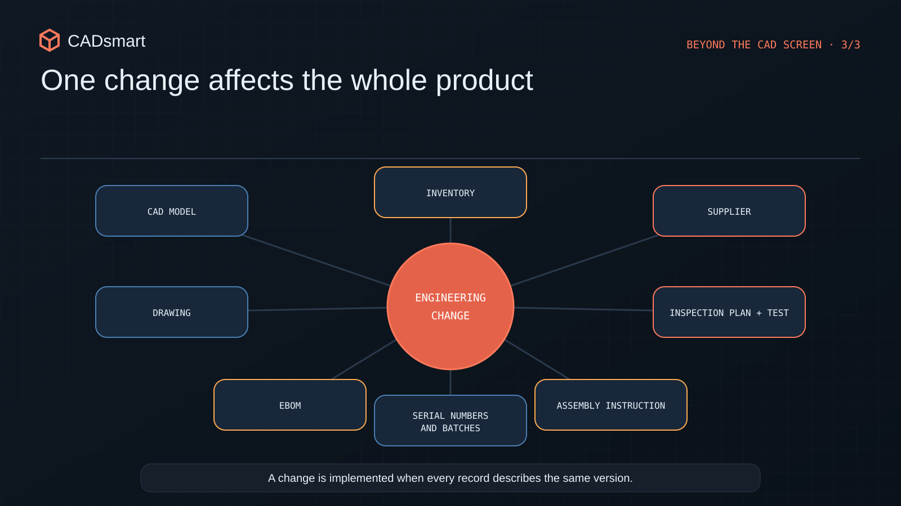
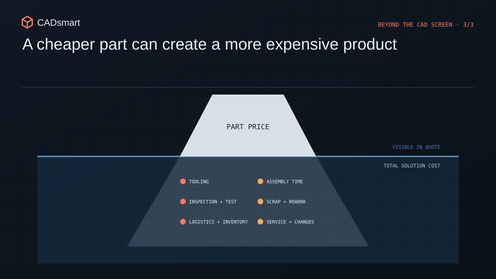
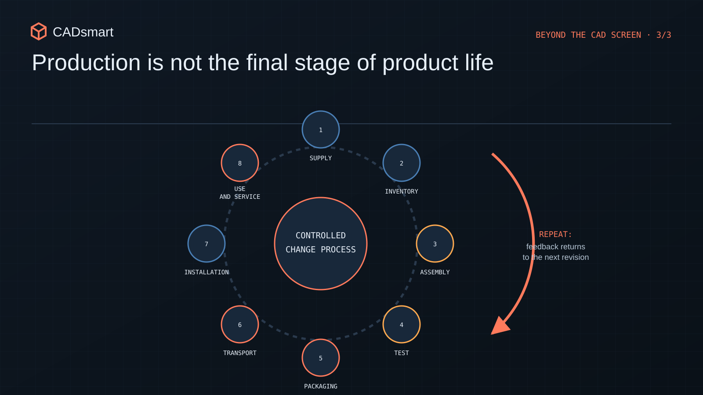

The prototype works. What must happen before production begins?
How to move from a working prototype to a repeatable product: testing, documentation, change control, cost, assembly and lifecycle.
A working prototype is only the beginning
A working prototype gives the team something essential: evidence that the main concept makes sense. The mechanism moves, the structure carries its load, the device performs its function and a stakeholder presentation finally has something tangible to show. This is an important moment, but it is easy to draw an overly broad conclusion from it: “the product is almost ready”.

A prototype confirms selected hypotheses. Production, by contrast, requires repeatability, inspectability, current documentation, a stable supply chain and a process that does not depend on one person's knowledge. A unit assembled by the R&D team may work because of adjustments made on the spot, manual fitting and familiarity with every previous iteration. The factory should not need the same context. Moving from “it works” to “we can manufacture it repeatedly” requires five areas to be closed: validation, acceptance criteria, documentation and change control, whole-product economics and the product's life after it leaves manufacturing.
1. A test must confirm risk, not merely operation
The first prototype usually answers the most important functional question. Subsequent tests should be built around risks. Otherwise, the team may repeatedly confirm what it already knows while leaving untested the conditions that will determine whether the product succeeds.

A validation plan should begin with a map of risks and requirements. For each key assumption, define:
- exactly what is to be confirmed;
- which unit, configuration and conditions are representative;
- what will be measured and with what accuracy;
- how many repetitions are needed to support the decision;
- what constitutes a positive result;
- what happens if the result is marginal or negative.
Not every test has to be elaborate. What matters is that it is designed around a decision. Sometimes a simple fixture that enables repeatable loading and measurement is enough. In other cases, several factors must be compared—for example through design of experiments (DOE)—to distinguish the influence of individual parameters.
While working on electromechanical products, I prepared test protocols and reports, acceptance criteria and fixtures supporting production testing. The common requirement was to translate a requirement into a repeatable method. Without this, even a large number of trials may leave the team without a clear answer.
2. Acceptance criteria must work without the designer standing nearby
During prototyping, a team tolerates ambiguity. The designer knows how to route a cable, how tightly to secure a joint and which sound is normal. In production, that knowledge must become a way of working that can be communicated, performed and inspected.
“Matches the model” is not a sufficient criterion. Critical characteristics, inspection methods and decision limits are required. The team must also verify that the selected dimension or parameter can actually be measured under production conditions. A good control plan connects three levels:
- Part: were the critical characteristics manufactured in accordance with the documentation?
- Assembly: does the joining and adjustment process produce the correct result?
- Product: does the completed unit perform its function and meet safety requirements?
If a product undergoes only a final test, a defect may be discovered very late, after the costs of parts and assembly have already been incurred. If everything is inspected without reference to function, the process becomes expensive and slow. The aim is to inspect the right characteristics at a point where the information still enables an effective response.
3. Documentation must describe one current product configuration
A prototype may be built from a mixture of files, notes, messages and manual corrections. With a small team, everyone usually knows what changed. This model stops working as the number of parts, suppliers, workstations and units grows.

Production readiness requires a coherent information package. Depending on the product, this may include:
- approved models and drawings with revisions;
- the EBOM—engineering bill of materials;
- specifications for standard components;
- assembly instructions and required tightening torques;
- inspection and test procedures;
- marking, packaging and transport requirements;
- a record of decisions concerning deviations and changes.
The mere presence of files does not amount to configuration control. The team should be able to answer which revision is current, where it was approved, from which unit it applies and what other items it changes.
In a PLM environment, ECR and ECO processes—engineering change requests and orders—help carry a change through the product rather than correcting one isolated file. This matters especially when one decision affects the model, drawing, BOM, inventory, assembly instruction and test at the same time.
While working with Arena PLM, EBOM structures and change processes, I saw that the tool is only part of the solution. Responsibility must come first: who initiates a change, who assesses its impact, who approves it and how manufacturing receives unambiguous implementation information.
4. Optimise the cost of the product and process, not the price of one part
Once function has been confirmed, pressure to reduce cost follows naturally. Part prices are the easiest values to compare, but they represent only one element of product economics. A cheaper component may require an additional bracket, longer assembly, separate inspection or more frequent rework. A more expensive part may simplify the assembly, reduce the number of fasteners and shorten testing.

A decision should therefore be assessed through the total cost of manufacturing and support. Useful questions include:
- how many operations and tool changes assembly requires;
- which tasks are susceptible to error;
- whether special fixtures are required;
- the cost of inspection and testing;
- how many part variants must be held in inventory;
- whether the supplier can repeatedly maintain the required tolerances;
- what happens to cost at the target volume.
This is where DFMA—design for manufacture and assembly—becomes a business tool. Fewer parts, simpler locating, better access and fewer opportunities for incorrect assembly can simultaneously shorten lead time, improve quality and reduce risk.
When launching products into volume production and establishing R&D and manufacturing procedures, the key challenge was moving from one working unit to a process that repeatedly produced the same result. That requires collaboration between design, purchasing, quality, suppliers and assembly—not a one-off “cost-down” exercise at the end.
5. Production is not the final stage of a product's life
A finished product must still be protected, transported, installed, used, serviced and eventually withdrawn. Every one of these stages can expose an assumption overlooked in the prototype.

Packaging is a good example. A product that works in the laboratory may not survive transport, or may require an expensive crate if the design does not account for support points, vulnerable components and lifting methods. In a project delivered for a client in the United States, packaging was part of the scope alongside design, cost and coordination. It was not an addition after design had finished, but a condition for delivering the solution.
Service follows the same principle. Access to wear parts, diagnostic capability, disassembly time and revision identification affect cost after sale. If the team does not consider them before design freeze, later improvements may require changes to the enclosure, wiring or subsystem architecture.
Before production begins, the product should therefore be walked through its complete scenario:
- receipt of components;
- storage and identification;
- assembly and testing;
- packaging and transport;
- installation at the customer's site;
- use, service and change management;
- withdrawal or replacement.
When does a prototype become a product?
There is no single ceremony that turns a prototype into a product. Readiness develops when evidence, documentation and process begin to form a coherent system.
Before scaling, confirm that:
- key requirements have test results and unambiguous criteria;
- critical characteristics can be manufactured and inspected;
- the documentation describes one approved configuration;
- changes have owners and a controlled implementation method;
- cost has been assessed at product, assembly, quality and service level;
- packaging, transport, installation and lifecycle do not depend on improvisation.
A working prototype is important evidence. A production-ready product requires something more: a repeatable way for suppliers, manufacturing and inspection to achieve the same result—even when the R&D team is not standing nearby.
If you are preparing a product for NPI, a production launch or a documentation handover to suppliers, I can help review production readiness, DFMA, the EBOM structure, the test plan and the change-control process.
Check production readiness
Would you like to assess whether a working prototype can already be manufactured and inspected repeatably?
Open 9 review questions
- Have the greatest risks been verified on a representative number of units, at boundary conditions and with variation in parts, assembly and use included?
- Is every test linked to a requirement, a measurable acceptance criterion and a defined decision following a positive, negative or borderline result?
- Can someone outside the R&D team perform the inspection from the documentation using the specified instrument, datum method, measurement conditions and result limits?
- Does the nonconformance process define product identification, the decision owner and the rules for deviation, rework and reinspection?
- Can the configuration of any unit be reconstructed, including the applicable revisions of models, drawings, EBOM, instructions and tests?
- Does every change have approval, a defined implementation point and effectivity range, and an impact assessment covering documentation, inventory, suppliers, manufacturing and units already built?
- Does the target cost include volume, labour, tooling, inspection, scrap, logistics and service rather than moving savings from a part to another stage?
- Can a part, operation, adjustment or opportunity for incorrect assembly be eliminated without compromising product function or serviceability?
- Have packaging, transport, installation and service been verified under real conditions, and does feedback from manufacturing and field use enter a controlled change process?
Would you like to save these questions for later?